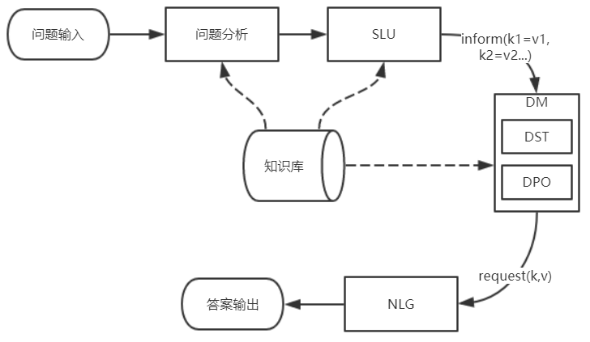

第一篇真正的博文，就转发一下自己为公司写的软文吧，闻言、明义、知心——你的智能伙伴，聊天机器人
“Hello！I am Baymax，Your personal healthcare companion.” （“你好，我是大白，你的个人健康伙伴”）——《超能陆战队》。
《超能陆战队》是一部于2015年上映的动漫科幻电影，成功塑造了“大白”这样一个憨态可掬、善解人意的智能机器人的形象。与冷冰冰的机器相比，大白不仅能跟主人公小宏进行萌萌哒的语言交流，而且还能感受、理解小宏的意图、情绪和情感，帮助小宏克服种种困难，完成各种挑战。假如现在也给我们这样一个“大白”的话，我想你我应该都不会拒绝的。
虽然到目前为止， 现实中还不存在像“大白”这样一个暖心的智能伙伴，但是人工智能技术地发展，催生了各种聊天机器人的出现（小冰、小娜、小蜜、小爱同学、Siri、balabala…），正让这位暖心的朋友一步一步地向我们走来。现在这些还活在我们手机、电脑或音箱里的聊天机器人已经可以帮我们做一些类似于机票预定、问题解答等相关的事情了，甚至它们还会不时地“撩”你一下哟。
环肥燕瘦
自2016年谷歌I/O开发者大会发布Google Home智能音箱以来，国内外掀起了一股聊天机器人产品化的热潮，国内外的百度、阿里、小米、亚马逊、微软等知名厂商纷纷发布了各自的聊天机器人产品和开放平台。微软的当家人萨提亚·纳德拉更是提出了对话即平台（Conversations as a Platform， CaaS）的发展战略。
现在已经迈入2019年下半年的门槛了，到目前为止，市面上涌现了各式各样的聊天机器人产品。这些聊天机器人可能是一个圆圆或者方方的智能音箱，安静的待在角落里时刻等待着你的召唤。它们还可能藏身于一部手机、一块手表，时刻陪在你的身边，帮你订外卖、问天气、查路线。有的时候它们会化身为“人”，热情地欢迎你的光临。或许你不是一个张扬的人，不喜欢把一切都说出来，它们也会耐心地跟你用文字传递心意。
多才多艺
各种各样的聊天机器人产品正通过语言和文字这两种最接近人类交互的方式，慢慢地融入到我们生活、学习、工作当中，让我们身边的一切都开始变得智能起来。目前，聊天机器人已经在智能家居、智能生活、智能客服等领域取得了初步的成效。未来，在更多的领域，它们都会像一位专属于你的私人秘书一样，只要你跟他简单地“说”一句，它们就会理解你的想法，帮你完成想做的事情。
智能家居
目前很多的智能音箱产品或者语音助手都提供了家居场景的解决方案，用户可以通过人机对话的方式对家庭中各类电子设备的控制，如家居机器人、灯光、冰箱、插座、空调、电视、窗帘等等，彻底解放双手。想象一下，未来在自己的家中，我们或许真的能过上“衣来伸手饭来张口”的日子。
智能生活
现在是移动互联网的时代，智能手机与各种智能穿戴设备都已经非常流行。在系统级别上，用户在唤醒手机助手或智能设备后，可以通过对话的方式进行交流、操作和控制，获取资讯以及各项生活服务 等等。在app级别上，用户亦可以通过对话的方式，免手持对app进行功能操作或内容获取等。现在我们已经可以通过语音助手查天气、订外卖、订机票、打电话、发短信等等一系列事情了，未来，随着技术的不断进步，我们可能会拥有一位更全能的智能“生活管家”。
智能客服
现在各种网站以及app开始越来越多的把聊天机器人集成到客服系统中，相对于人工座席客服，聊天机器人可以提供7*24不间断的服务。目前机器人客服已经可以代替人工客服解答一些高频的问题，使得人工客服能够聚焦于更高价值的业务，有效地降低了人力成本，提升了人效。
其它
除了上述应用场景外，聊天机器人还被越来越多地应用于智能出行、智能服务等场景中，随着人工智能的不断发展，我们可能会在越来越多的场景中看到聊天机器人的身影。
三大流派
聊天机器人的形态多种多样，交互的方式也不尽相同，但是对所包含的功能进行划分的话，总体上可以分为任务型、问答型和闲聊型三种。有些机器人产品只包含某一种类型的功能，而另外一些则会集成其中两种或所有类型的功能。
任务型
任务型机器人指特定条件下提供信息或服务的机器人。通常情况下是为了满足带有明确目的的用户，例如查流量，查话费，订餐，订票，咨询等任务型场景。由于用户的需求较为复杂，通常情况下需分多轮互动，用户也可能在对话过程中不断修改与完善自己的需求，任务型机器人需要通过询问、澄清和确认来帮助用户明确目的。其基本流程如下：

口语理解（SLU）：把用户输入的自然语言转变为结构化信息——act-slot-value三元组。例如餐厅订座应用中用户说“订云海肴中关村店”，我们通过NLU把它转化为结构化信息：“inform(order_op=预订, restaurant_name=云海肴, subbranch=中关村店)”，其中的“inform”是动作名称，而括号中的是识别出的槽位及其取值。
对话管理（DM）：综合用户当前query和历史对话中已获得的信息后，给出机器答复的结构化表示。对话管理包含两个模块：对话状态追踪（DST）和策略优化（DPO）。 DST维护对话状态，它依据最新的系统和用户行为，把旧对话状态更新为新对话状态。其中对话状态应该包含持续对话所需要的各种信息。 DPO根据DST维护的对话状态，确定当前状态下机器人应如何进行答复，也即采取何种策略答复是最优的。
自然语言产生（NLG）：把DM输出的结构化对话策略还原成对人友好的自然语言。简单的NLG方法可以是事先设定好的回复模板，复杂的可以使用深度学习生成模型。
问答型
问答型机器人的主要任务是从特定知识库中找出与用户提出的问题最匹配的答案。智能客服通常都会包含这一类型的机器人，用于回答一些高频的问题，减轻人工客服的压力。其基本流程如下：
文本检索和匹配是问答型机器人的核心组成部分，除此之外，可能还会重排序这一功能模块。
文本检索：首先通过检索的方式从知识库的大量语料中筛选出可能包含答案的候选集，供后续匹配模块打分，计算相似度。文本检索主要包含词语级别和句子级别两种方式，其中词语级别是通过关键词匹配进行的，句子级别是基于语义度量进行的。
文本匹配：通过字面或者语义等不同的方式计算用户所提问题与候选集的相似度。这些相似度会直接用于返回答案或者供后续重排序模块使用。
重排序：类似于ensemble learning中的stacking，利用各种不同类型的相似度分数作为输入，重新对候选集进行排序，排序的结果将最终用于生成答案。
闲聊型
真实应用中，用户与系统交互的过程中不免会涉及到闲聊成分。闲聊功能可以让对话机器人更有情感和温度。闲聊机器人可以通过事先准备的闲聊库实现，这样的话，类似于问答型的机器人。另外一种实现方式是使用机器翻译中的深度学习seq2seq框架来产生答复，相比于前一种实现方式，这种方式通常能产生更多样化的回答，智能化程度更高。
结语
聊天机器人承载了全新的交互形式，可能带来了全新的产品服务体验，这种进步过去从来没有过。我们每个人几乎都在渴望着机器人时代的到来，也许很遥远，也许已经在路上，谁知道呢？Hello，大白，你快到了吗？
参考资料
- 小米AI音箱：https://www.mi.com/aispeaker/
- 天猫精灵：https://bot.tmall.com/
- unit开放平台：https://ai.baidu.com/unit/home
- 关于对话机器人，你需要了解这些技术：https://blog.csdn.net/qq_40027052/article/details/78723576
- 揭秘任务型对话机器人（上篇）：https://www.cnblogs.com/qcloud1001/p/9181900.html
- AnyQ：https://github.com/baidu/AnyQ